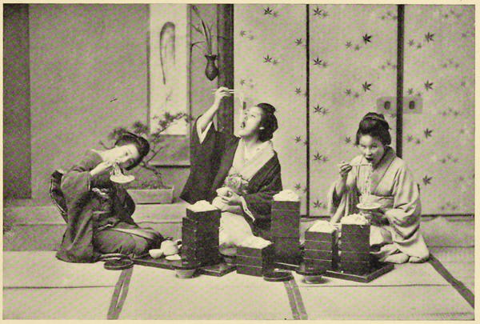

“Eating macaroni”
Japan: Described and Illustrated by the Japanese (1897)
Japanese food, with few exceptions, has nothing repellent to European taste; it is cleanly and neatly served, and one becomes accustomed to it quicker and easier than is possible with the native food in China.
Japan As I Saw It (1912)
I have finished supper. It was meagre enough for an anchorite; merely bread and rice, with tea and a boiled egg. There was an abundance of other things furnished in little bowls; fish cooked and uncooked; broth of strange odour and mysterious composition, shell-fish, cuttle-fish, and seaweed, all of which I tasted, and turned over to my jinrikisha-man, to his infinite delight. It seemed as if most of the dishes were luxuries to which he was unaccustomed; for even the fragments he gathered up. How curious that articles of food which are an abomination to one human being are so relished by another! Yet everything was good and clean; it was simply strange to me.
Rambles Through Japan Without a Guide (1892)
The dinner, which has been ordered, has arrived. Spread out upon the floor in lacquered bowls, it occupies the greater portion of the room. It has been quickly and deftly arranged by a train of neatly dressed maidens, who now seat themselves round it and invite us to partake. We have long since taken off our shoes, and now squat in a circle on the floor, and gaze with curiosity, not unmixed with alarm, at the display before us. There is raw fish thinly sliced, and salted ginger; there are prawns piled up with a substance which in taste and appearance very much resembles toffy; there are pickled eggs and rock leeches, and pieces of gristle belonging to animals unknown, to be eaten with soy; and yams and pears, and various sorts of fruits and vegetables prepared, some of them palatably enough; but still the experiment is hazardous, and we are relieved at the sight of a bowl of rice as a safe piece de resistance.
The ministering spirits seem to delight in pressing upon us the nastiest things, apparently for the amusement which our wry faces affords them.
Narrative of the Earl of Elgin’s Mission to China and Japan (1859)
The Japanese do not eat bread, but there are now bakers who make a good article for the use of foreigners, and it is apparent, from the name they give to it (pan), that the French must have given them the first idea of so doing. They get their flour from California.
The Sunrise Kingdom (1879)
All the pears I tried in Japan were tasteless things, and I believe it is not yet certain whether they are pears or apples.
Across America and Asia (1870)
It was quite dark when we entered the streets of Kurumé, and our men stopped to light their paper lanterns, as they are liable to be fined if they run a jinriksha unlighted after dark. My brother made them stop for a few minutes at a confectioner’s shop, where we could buy some sponge-cakes for our journey. Japanese sponge-cake, or Castera, is very good, and, as its name denotes, is a survival of Spanish influence in Japan during the 16th century, when Castilians introduced it into the country, and, owing to the absence of an L in the Japanese alphabet, Castile was soon corrupted to “Castera.” It is made in large flat wedges, and we were much amused when my brother came out of the shop with a supply about half a yard long for our journey.
Japan As We Saw It (Bickersteth) (1893)
What was the bill of fare [at the inn in Utsunomiya]? Something of this sort. Cold soup, hot soup, with a stiff sort of custard floating in it (oh, so hard to pick up with chopsticks!); a sort of curry, rice, tiny bits of radish, ginger, cooked chestnut, and two kinds of fish, and of course little cups of tea ad libitum. We attacked all, everything being in very small quantities, with chopsticks.
Japan As We Saw It (Bickersteth) (1893)
We soon managed our chop-sticks with considerable dexterity. As all the world knows, both must be held in the right hand, and the only chance of success is to keep the lower one steady. Even then, in manipulating a fish, the temptation is intense to steady the slippery morsel by taking a chop-stick in each hand; but we only yielded in cases of genuine necessity.
Japan As We Saw It (Bickersteth) (1893)
The night before I left Japan I was invited to a purely native dinner, only one or two of the guests being Europeans. It was in a Japanese house, and we had to leave our boots on the outside and go up a steep stair in our stockings. In the room we found on the floor small mat-like cushions, about twenty-four inches square, and, following the custom of the country, I placed my knees on this, as if I had knelt to pray. In this position a Jap can sit for hours; but as my joints had been educated in another quarter of the universe, the pose had to be often changed during the dinner. Japanese ladies were among the party, and I chanced to have one on each side of me. To the one on my right, whose name was “Chika,” I was indebted for most of my dinner. As the dinner was purely Japanese, there were no knives or forks—only chop-sticks. These are not unlike pencils, but I have not yet met an artist who had tried to draw with two pencils, and that ought to be quite as easy as eating with chopsticks. In Chika’s hands the two bits of wood seemed to do anything, and she most kindly came to my rescue when I was making what I may literally call a mess of it. There is an old saying that fingers were made before forks, and I feel certain that archæological investigation will make it clear that fingers were also ante-chopstick. The dishes were peculiar. Soup, with sea-weed to give it a flavour, was, I considered, a happy thought. Fish and duck together formed a mixture I had never heard of before. Revenge is clearly to be distinguished from just retribution, and this was my feeling when a course of shark was stuffed into my mouth by Chika’s chop-sticks. As shark has so often eaten mes semblables, it was turning the tables, in the most literal sense, to eat instead of being eaten. What the various dishes were made of I cannot exactly say. Courage has never yet failed me in moments of danger, but I confess that I felt some timidity during that dinner, and, with regard to some of the dishes, I should have liked to know of what they were composed. I could now listen to the information unmoved, but I was anxious to appear not to shrink from doing justice to what our entertainers evidently considered was especially excellent. So, mentally, I closed my eyes, and opened my mouth and took whatever was offered. It ought to have been stated that our table was the floor, but then a Japanese floor is as clean as any table in the world. It was wondrous at last to see how it got covered with bowls, cups, plates, saucers, and innumerable quaint bits of pottery of all colours—black, red, blue, and white.
Meeting the Sun (1874)
Travelling in Japan is slow—the trains do not go so fast as they do in England—but it is not intolerably uncomfortable. There are no dining-cars, except on a very few long-distance trains, and there are no refreshment-rooms; but at intervals all along the line provision is made for satisfying the wants of the inner man. As the train moves slowly into certain stations, vendors of refreshments come out to sell their wares. One man has tempting little bento or lunch-boxes, made of beautifully clean white wood. The lower compartment is filled with boiled rice, packed in tight—about as much as would make a fair-sized pudding; in the upper compartment is an assortment of delicacies to eat with the rice—a few pieces of eel fried in shoyu, one or two pieces of chicken, some pickled beans, a slice or two of lily-root, a little kamaboko, a concoction of fish and bean-flour, a stick or two of ginger. The whole is fastened together with a little piece of string, through which, in a long dainty envelope, is stuck a pair of chopsticks. You are quite sure that they have never been used, for they are still in one piece, split about four-fifths of the way down, and you have to pull the pieces apart before you use them. A little wooden toothpick, sticking between the chopsticks, completes the apparatus. Thus armed, you eat at your leisure when the train is once more in motion, and when you have finished you throw what remains, box and all, out of the window, or push it under the seat.
Every-day Japan (1909)
We jogged homewards back through the quiet streets to where policemen again waited to take us in charge, and crowds again pressed and scrambled to stare at us; and so, thoroughly exhausted by our first day in Yedo, to seek repose in the cloisters of our temple. We found, however, that another ordeal was to be passed before we could flatter ourselves that we should be left alone. The Emperor had sent a Japanese dinner to his Excellency, and when we arrived the floor of our dining-room was strewn with delicacies. Each person was provided with a little repast of his own, the exact ditto to that in which all his friends were indulging;—and when anybody made a gastronomic discovery of any value, he announced it to the company: so at the recommendation of one we all plunged into the red lacquer cups on the right, or, at the invitation of another, dashed recklessly at what seemed to be pickled slugs on the left. We found it difficult even then to describe to each other the exact dishes we meant, how much more hopeless to attempt it now? There was a good deal of sea-weed about it, and we each had a capital broiled fish. With that, and an immense bowl of rice, it was impossible to starve; but my curiosity triumphed over my discretion, and I tasted of every pickle and condiment, and each animal and vegetable delicacy, of every variety of colour, consistency, and flavour; an experience from which I would recommend any future visitor to Japan to abstain.
As the Japanese have neither pigs nor sheep, poultry, venison, and fish are the staples. Many of the religious sects in the country forbid the consumption of animal food. Meanwhile our lacquer cups were abundantly replenished with hot sakee, a spirit extracted from rice, and of a pale-sherry colour. It is by no means of a disagreeable flavour, though, when imbibed very hot, it is somewhat intoxicating. We were thankful at last to get to bed after so much excitement; and if our rest was somewhat troubled, we had no right to complain.
Narrative of the Earl of Elgin’s Mission to China and Japan (1859)
Dined yesterday with my two Japanese fellow-voyagers from San Francisco. “Before trying to travel through the country,” said Mr. Sato, “you should have one good dinner in real Japanese style, for you get no idea of our cookery at your hotel.” A few minutes’ walk brought us to one of the principal restaurants in Tokio, and in the outer court we were met by the proprietor with profoundest salutations. Removing shoes and sandals, we went upstairs, and were ushered into a room perfectly plain and empty. One end looked out upon a tiny garden; I say “end,” because the entire side of the house seemed taken out. The floor was spread with clean matting, upon which, in the centre of the room, were four circular bits of oil-cloth, about a yard in diameter. “Will you be seated?” cried my friend, who had many a laugh at my ineffectual efforts to double into any comfortable position on a floor—a thing I gave up utterly—assuming, instead, a half-reclining posture. In front of each guest was a tray upon which was a carven section of bamboo, fashioned so as to be a receptacle for smoked-out tobacco, and beside it an earthen bowl with live coals, covered thinly with ashes, fantastically arranged in shape of a volcano, and used to light pipe or cigar. The tobacco smoked is very mild, and the custom is to take but three or four whiffs at a time.
The host clapped his hands; a serving-maid came, who, dropping upon her knees, bent her head to the floor to hear our august wishes, and then disappeared. Returning, she brought us tea in the smallest of cups, accompanied with confectionery, sprinkled with powdered tea-leaves. These are brought in before every meal; whether luncheon, dinner, or breakfast, one always has tea and candy. The other dishes were brought on in courses, but not removed during the meal. First came, in blue china bowls, a soup tasting something like the liquor of raw oysters, in which was half the head of a large fish. “Why, it has the eye in it!” I said with a shudder. “The eye is the choice part,” said my Japanese friend, extracting this portion of his fish with a chop-stick, and swallowing it with gusto. “They use only the head of the fish, and serve one eye to each guest. Try it; it is delicious.” It was not delicious to me. The next dish was shreds of raw fish served with a kind of ginger sauce. Poising a bit of the fish between your chop-sticks, you dip it into the sauce and then convey it to your mouth. I did not like it. Something besides fishes’ heads or raw fish would have been acceptable. But the next course was fish, cooked; and then a boiled lobster cooked whole, one to each guest; an omelette; and rice eaten without sugar, milk, or any kind of sauce. These, with hot and cold saké, completed the repast. There is no grease in the cooking, and very little artificial addition of extraneous flavours. That which a Japanese finds most distasteful in European cookery is the greasiness of so many dishes. Said Sato, “Butter and lard seem necessary to your existence; but to me even cheese at first was as horrible as putrid flesh would be to you.” Saké, the national drink, made from rice, is served in little cups holding about a large tablespoonful.
I half suspect that the first part of the dinner, after all, was no fair example of Japanese hotel cuisine, but contrived for my benefit, and consisting chiefly of unusual dishes. A Frenchman doesn’t live on frogs or snails; but he might prepare a dish of both for the benefit of a foreign guest.
Rambles Through Japan Without a Guide (1892)
◀ TattoosBeverages ▶